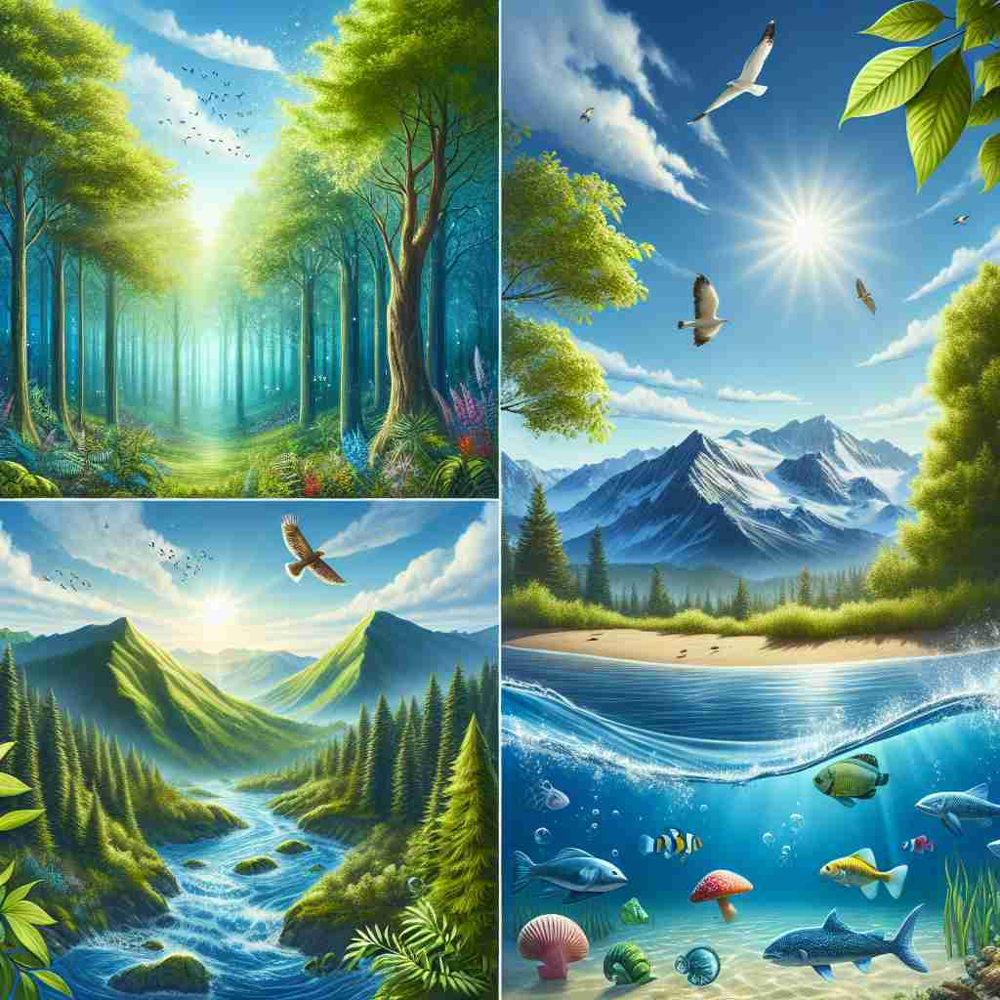

💬 The colorful fish live in a rich marine environment. 色彩斑斓的鱼生活在丰富的海洋环境中。

💬 The plants grow well in their natural environment. 植物在其自然环境中生长良好。
💬 The employees are focused on their tasks in a pleasant work environment. 员工们专注于自己的任务，并在愉快的工作环境中奋斗。

💬 The forest is a beautiful natural environment for many animals. 森林是许多动物美丽的自然环境。
🧠 想象'environment'是一个包围着某物的圈子。这个圈子可以是自然界、工作场所、计算机系统，甚至是无形的社会文化力量。所有这些含义都源于'周围环境'这个核心概念，只是应用在不同的情境中。记忆时，可以想象不同的'圈子'如何影响其中的事物，这样可以更容易理解和记住'environment'的多重含义。
🔈 [ɪnˈvaɪrənmənt]
🗝️ n. the surroundings or conditions in which a person, animal, or plant lives or operates 一个人、动物或植物生活或运作的环境或条件
🎭 在一个繁茂的森林中，各种植物竞相生长，鸟儿在树枝间欢快地跳跃。阳光透过树叶洒在地上，昆虫在草丛中忙碌着。这是动物和植物赖以生存的环境。
💬 The natural environment is being polluted by human activities. 自然环境正受到人类活动的污染。
🌳 由词根 "viron"（来自拉丁语 "virere"，意为 "环绕"）和前缀 "en-"（使动）加上表示名词的后缀 "-ment" 组成，表示 "周围的环境"。
🕸️ 1.environmental: 环境的 2.environ: 包围 3.environmentalist: 环保主义者
💡 记忆 "environment" 时，可以联想 "envelop"（包围）的概念，环境就像一个包围着我们的一切，适用于我们生活的周围。